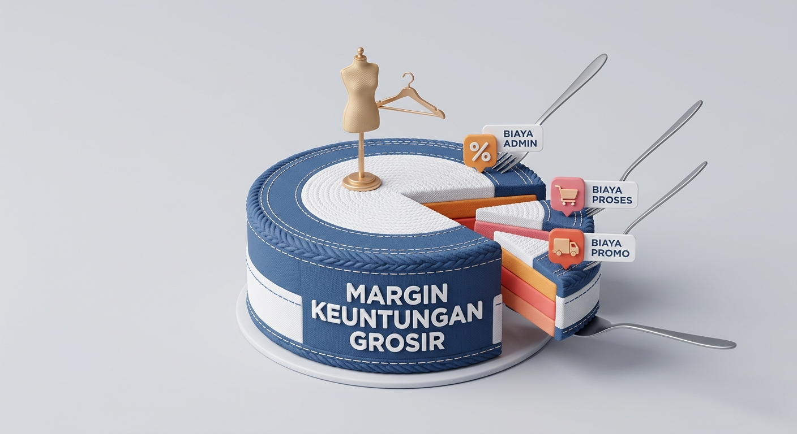
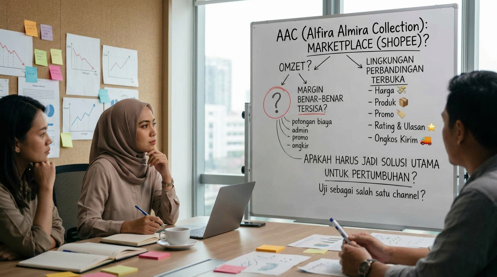

SEBELUM MASUK MARKETPLACE
Bun, kemarin-kemarin kan Bunda sempat nanyain tentang bagaimana sistem dan cara berjualan di Shopee
Nah, kenapa waktu itu saya bilang menurut saya Shopee kurang cocok untuk dijadikan solusi pengembangan AAC?
Bukan berarti Shopee jelek, ya Bun.
Justru Shopee adalah salah satu marketplace besar dan memang menyediakan berbagai fasilitas untuk penjual, termasuk fitur produk grosir.
Jadi, persoalannya bukan pada bagus atau tidaknya Shopee.
Yang ingin saya perlihatkan adalah:
Apakah model marketplace seperti Shopee merupakan channel yang paling sesuai dengan
karakter bisnis AAC saat ini?
Karena kalau kita melihat AAC, bisnis ini sudah memiliki skala yang cukup besar dan selama ini target utamanya bukan hanya pembeli eceran, tetapi juga customer grosir.
Dan ketika sebuah produk dijual melalui marketplace, kita tidak hanya perlu menghitung harga jual dan modal barang. Ada beberapa komponen biaya yang perlu diperhitungkan.
Misalnya, Shopee mengenakan Biaya Administrasi Penjual. Besarannya berbeda-beda tergantung status penjual dan kategori produk. Selain itu, terdapat Biaya Proses Pesanan sebesar Rp1.250 untuk setiap transaksi yang selesai, dengan ketentuan pembebasan biaya tertentu untuk sebagian penjual baru. Ada juga biaya layanan tambahan untuk layanan atau program tertentu. Contohnya, untuk produk Pre-Order yang memenuhi kriteria tertentu, Shopee mencantumkan Biaya Layanan Produk Pre-Order sebesar 3% per kuantitas produk untuk kategori yang berlaku. Kemudian ada program seperti Gratis Ongkir XTRA dan Promo XTRA dengan ketentuan masing-masing.
Artinya, bukan berarti setiap transaksi di pasti dikenakan semua biaya tersebut sekaligus. Biayanya tergantung pada status penjual, kategori produk, layanan atau program yang digunakan, serta ketentuan yang berlaku
Untuk selengkapnya bunda bisa cek di situs resmi Shopee

Nah, kalau kita lihat dari sisi pembeli, marketplace memang memberikan kemudahan dan kenyamanan. Tapi kalau kita lihat dari sisi penjual, ada beberapa hal yang perlu diperhatikan.
Tetapi justru karena itu, menurut saya sebelum AAC masuk lebih serius ke marketplace, kita perlu menghitungnya terlebih dahulu. Karena yang perlu kita lihat bukan hanya:
Berapa omzet yang bisa masuk dari Shopee?
Tetapi juga:
Berapa margin yang benar-benar tersisa setelah seluruh biaya yang relevan diperhitungkan?
Dan ada satu hal lagi yang menurut saya penting.
Di marketplace, customer bisa dengan sangat mudah menemukan dan membandingkan berbagai produk yang sejenis.Artinya, AAC akan berada di dalam lingkungan yang sangat terbuka untuk perbandingan: harga, produk, promo, rating, ulasan, dan ongkos kirim.
Dan untuk bisnis yang sudah memiliki positioning, customer base, serta pola penjualan sendiri seperti AAC, menurut saya kondisi ini perlu dipertimbangkan dengan hati-hati.
Jadi sekali lagi, saya bukan mengatakan:
AAC jangan jualan di Shopee.Menurut saya, Shopee tetap bisa menjadi salah satu channel penjualan yang layak diuji.
Yang saya pertanyakan adalah:
marketplace harus menjadi solusi utama untuk pertumbuhan AAC?
tapi walaupun begitu,keputusan tetap ada di tangan Bunda dan Abang.